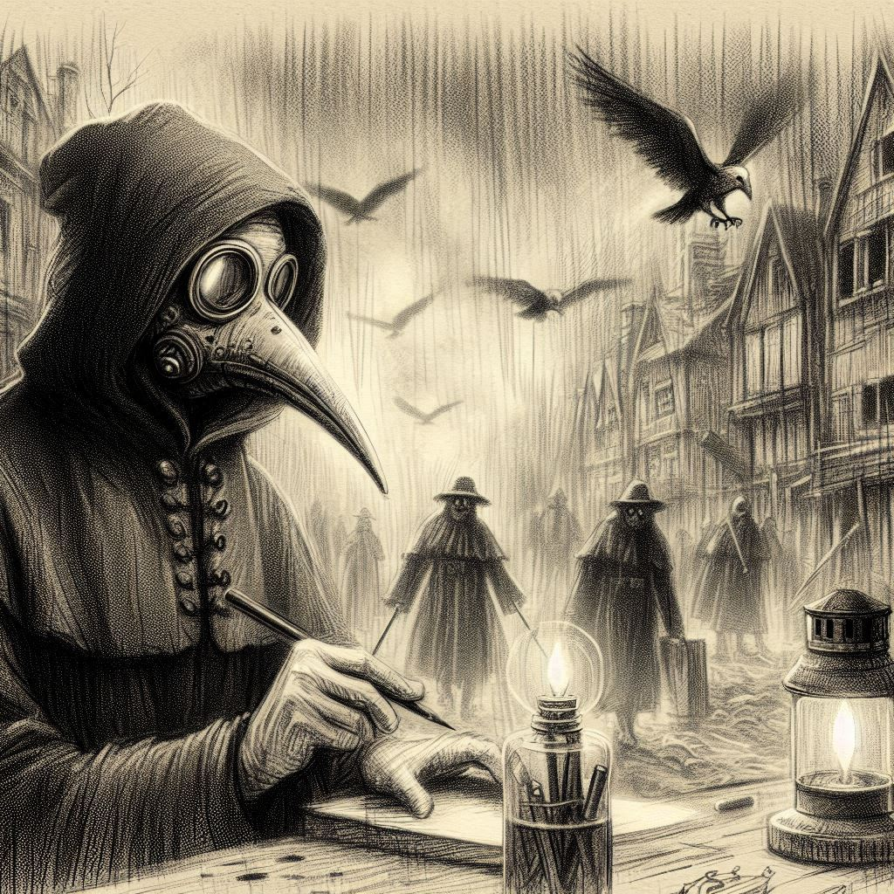

작가
알베르 카뮈
출판일
2011년
감상평에 대한 AI그림
페스트라는 병이 있었다는 것만 알았는데, 이 책을 통해 당시 상황을 접해보니 생각보다 더 암울하고 심각했다는 걸 느꼈다. 당시가 코로나 유행 직후 시기라서 책 내용이 더 잘 와닿았다. 전염병에는 초반의 신속한 대처가 중요하다는 생각이 들었다.

감상평에 대한 AI평가
이 감상평은 전반적으로 중립적이지만 약간의 부정적인 감정이 포함된 분석적 평가로 보이네.
✨ "암울하고 심각했다" → 부정적인 감정 (충격, 안타까움)
✨ "더 잘 와닿았다" → 공감과 몰입 (긍정적 요소)
✨ "신속한 대처가 중요하다" → 교훈을 얻음 (객관적, 분석적)
즉, 책을 통해 역사적 사실을 접하며 충격을 받았지만, 그것을 현대적 상황과 연결하며 교훈을 얻는 태도가 담겨 있어!